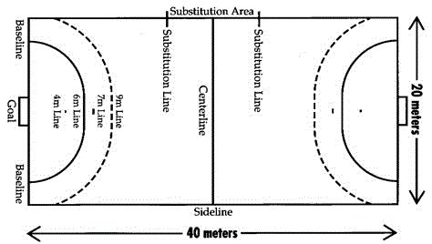

<- Kembali
Bola Tangan
3 Materi
Pengertian & Sejarah
Bola tangan adalah cabang olahraga bagian bola besar beregu terdiri dari 14 16 pemain dengan 7 pemain inti termasuk kiper dan sisanya adalah pemain cadangan. Olahraga bola tangan diperkirakan sudah ada sejak zaman Yunani Kuno sekitar abad ke 130 - 200 Masehi. Urania adalah nama olahraga yang mirip dengan bola tangan. Pada abad ke 11 Masehi, permainan bola tangan berkembang hingga ke negara Jerman.
Dipopulerkan oleh seorang pria bernama Walther Von Der Vgelweide dengan nama yang berbeda, yaitu fangballspiel atau jika diterjemahkan dalam bahasa Indonesia permainan tangkap bola yang terdiri dari 11 pemain. Pada abad ke 14 Masehi, olahraga ini telah dimainkan di Denmark dan Perancis. Serta penduduk asli Amerika yang disebut suku Eskimo telah memainkan ini pada abad 17 Masehi. Sekitar abad ke 19 Masehi, bola tangan mulai mengalami beberapa perubahan peraturan dengan 7 orang pemain dan dikenal dengan bola tangan lapangan. Tokoh yang mengembangkan olahraga ini adalah pria asal Jerman yang bernama Hirschman dan Dr. Karl Schelenz. Mereka berdua dikenal sebagai penemu dari bola tangan lapangan modern. Hingga pada akhirnya, dibentuklah IHF (International Handball Federation) pada tahun 1946 dan mengadakan kejuaraan dunia bola tangan pada tahun 1954. IHF telah tercatat memiliki kurang lebih 160 negara sebagai anggota permainan bola tangan atau handball di Indonesia telah ada sejak zaman penjajahan Belanda, tetapi hal ini banyak tidak diketahui oleh masyarakat. Karena tidak adanya organisasi bola tangan, perkumpulan maupun pertandingannya.
Sarana dan Peralatan
a. Bola
Ukuran keliling dan berat Bola terdiri dari tiga jenis pria dewasa dan remaja putra 16 tahun ke atas 50-60m/ 425-275 gr (IHF3), wanita dewasa dan remaja putri di atas 14 tahun, remaja putra 12-16 tahun 54-56 cm/ 325-375gr (IHF2) dan anak putri 8-14 tahun dan anak putra 8-12 tahun 50-52 cm/ 290-330 gr (IHF1).
b. Lapangan Bola tangan
Keterangan:
1) Lapangan berbentuk empat persegi panjang, Panjang: 40 m dan lebar 20 m.
2) Gawang memiliki Tinggi 2 m dan lebar 3 m, di cat bergaris-garis dengan 2 warna berbeda. Garis gawang lebar 8 cm, semua garis lain 5 cm.